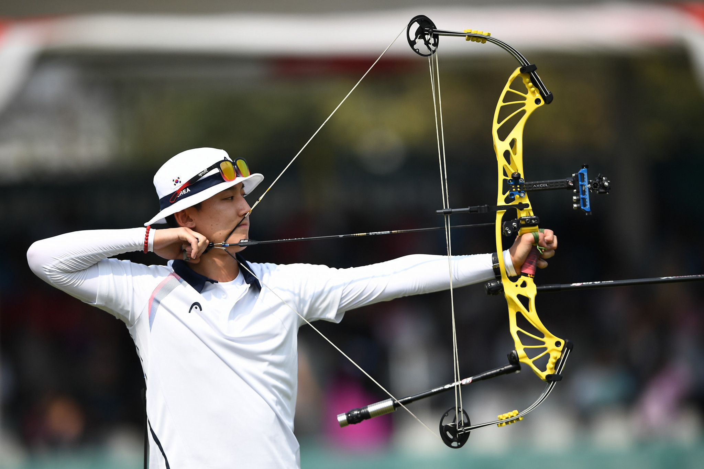

Double Olympic champion Bonchan exits in South Korea’s archery Tokyo 2020 trials
South Korea’s archery team for next year’s Olympic Games is starting to take shape as the selection process begins. The trials for the Tokyo 2020 team are expected to run until the spring, but the compound categories have already been decided. World number six Kim Jongho leads a compound men’s group that also features experienced international Choi Yonghee for his eighth successive season, alongside Yang Jaewon and newcomer Choi Eun-Kyu. Song Yun Soo and Kim Yunhee – winners of the World Archery Championships in 2017 and 2015 respectively, will headline the women’s compound squad. Oh Yoohyun returns to the team while So Chaewon is also involved after impressing in qualifying. Trials for the compound team were held over three days last week at the team's national training centre in Yecheon. A total of 97 men and 97 women was cut to 64 in each gender through 216 arrows at 70 metres in two days of recurve trials. The following two days saw the field sliced in half, leaving just 32 recurve men and 32 recurve women in the race for Korea’s six spots at Tokyo 2020 which has been postponed by a year due to the coronavirus pandemic. The highest-profile casualty came when double Olympic champion Ku Bonchan was eliminated after finishing 53rd.